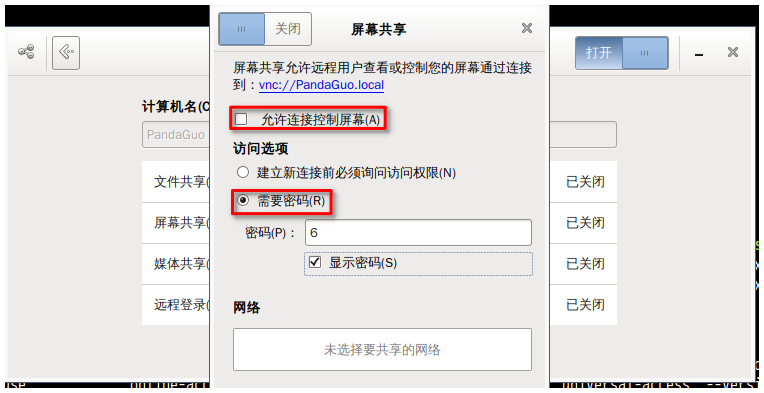

概述
桌面共享是指通过图形终端仿真器在计算机桌面上实现远程访问和远程协作的技术。桌面共享允许两个或多个连接到网络的计算机用户在不同位置对同一个文件进行操作。
本篇记录在debian启用桌面共享，在Win10的环境下以vncviewer远程访问Debian主机桌面的情景。
环境：
Panda.Guo@2018-05-07 18:15:36 $ lsb_release -ir; echo ""; uname -a
Distributor ID: Debian
Release: 9.4
Linux PandaGuo 4.9.0-6-amd64 #1 SMP Debian 4.9.88-1 (2018-04-29) x86_64 GNU/Linux
以下操作，基于debian9.4、内核4.9进行操作, 需要补充的是，我选用的是mate-desktop, 有些图形界面的操作，和gnome、xface等桌面环境有所不同。
主要内容：
- Debian环境下的桌面共享
- windows访问Debian共享桌面
- Debian访问windows共享桌面
Debian环境下的桌面共享
先定义两个术语：
- Host端： 启用桌面共享，
- Client端： 访问远程共享桌面
Host端环境搭建
安装vino(Gnome上的VNC服务端)
Panda.Guo@2018-05-07 10:19:58 $ sudo apt-get install vino
启动服务
Panda.Guo@2018-05-08 11:31:46 $ /usr/lib/vino/vino-server --sm-disable
采用 dconf-editor 进行服务配置
启动 dconf-editor 命令，
Panda.Guo@2018-05-08 11:42:48 $ dconf-editor
选择 org -> gnome -> desktop -> remote-access:
修改require-encryption 为 false, "如果为 true，要求访问桌面的远程用户支持加密。我们无需使用支持加密的客户端，
- alternative-port: 5900; 默认端口为5900
- authentication-methods: none ; 验证方法，如果为none表示允许任意用户连接， 如果为vnc代表在连接前需要输入口令。
- require-encryption: false; 取消加密要求， 不要要求Client端支持加密。
- icon-visibility: always; 总是显示图标， 默认为client表示仅在有人连接时显示图标。
- view-only： true ; 仅允许远程用户查看共享桌面，不能控制。
采用 gnome-control-center 配置服务器
Panda.Guo@2018-05-08 14:11:13 $ gnome-control-center sharing
配置选项如下图所示：

- 取消 “允许连接控制屏幕”
- 点选 “需要口令” ，
Client配置
安装 vncviewer
Panda.Guo@2018-05-08 14:23:21 $ sudo apt-get install tigervnc-viewer
访问共享桌面
Panda.Guo@2018-05-08 14:24:54 $ vncviewer 172.16.28.98
如果在Host勾选了“需要口令”，则需要输入口令。
Windows 访问debian共享桌面 1
在Windows下访问debian共享桌面，比较简单，Host配置参考上节配置，无需做任何修改。在win下安装 realvnc viewer即可。
选择standalone版本（免安装版本）。
- 双击运行后，输入Host端IP地址连接即可。
Windows 访问debian 共享桌面2
选择xrdp进行远程桌面共享， 可选配置项更多一些。 比如清晰度等等。
Host (debian) 配置
安装xrdp 、vino
xrdp， 远程桌面协议服务器，
Panda.Guo@2018-05-08 15:33:18 $ sudo apt-get install xrdp vino
服务启动
Panda.Guo@2018-05-08 15:37:26 $ sudo systemctl start xrdp.service
Panda.Guo@2018-05-08 15:36:39 $ /usr/lib/vino/vino-server start
服务配置
对vino-server 的配置，可参考第一个章节， 关于xrdp配置，可参考
- man xrdp
- man xrdp.ini
- man sesman.ini
需要注意的是，修改完成服务，需要重启服务。
xrdp支持xfce4和mate桌面,不支持gnome和ubuntu桌面
以下配置选项，有待进一步研究：
- /etc/xrdp/xrdp.ini
[globals]
bitmap_cache=yes #位图缓存
bitmap_compression=yes #位图压缩
port=3389 #监听端口
crypt_level=low #加密程度（low为40位，high为128位，medium为双40位）
channel_code=1 #不知道是什么
max_bpp=24 XRDP最大连接数
[xrdp1]
name=sesman-Xvnc XRDP的连接模式
lib=libvnc.so
username=ask
password=ask
ip=127.0.0.1
port=-1
- /etc/xrdp/sesman.ini
[Globals]
ListenAddress=127.0.0.1 #监听ip地址(默认即可)
ListenPort=3350 #监听端口(默认即可)
EnableUserWindowManager=1 #1为开启,可让用户自定义自己的启动脚本
UserWindowManager=startwm.sh
DefaultWindowManager=startwm.sh
[Security]
AllowRootLogin=1 #允许root登陆
MaxLoginRetry=4 #最大重试次数
TerminalServerUsers=tSUSErs #允许连接的用户组(如果不存在则默认全部用户允许连接)
TerminalServerAdmins=tsadmins #允许连接的超级用户(如果不存在则默认全部用户允许连接)
[Sessions]
MaxSessions=10 #最大会话数
KillDisconnected=0 #是否立即关闭断开的连接(如果为1,则断开连接后会自动注销)
IdleTimeLimit=0 #空闲会话时间限制(0为没有限制)
DisconnectedTimeLimit=0 #断开连接的存活时间(0为没有限制)
[Logging]
LogFile=./sesman.log #登陆日志文件
LogLevel=DEBUG #登陆日志记录等级(级别分别为,core,error,warn,info,debug)
EnableSyslog=0 #是否开启日志
SyslogLevel=DEBUG #系统日志记录等级
Client （Win10）访问共享桌面
选择win10自带远程桌面， 命令行操作如下
- cmd
- mstsc
- 选择vnc-any
- 输入 Host IP地址
- 端口 5900
- 桌面共享设定的口令
本例中， 口令为空即可